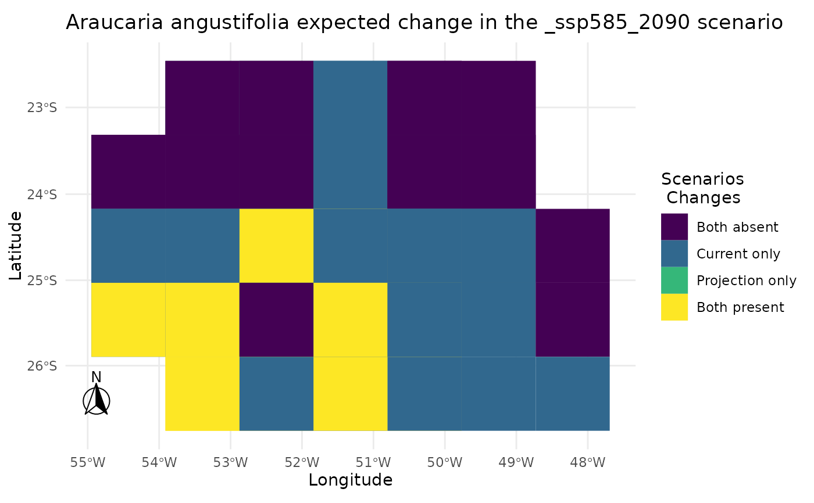

Provides an automate way for the visualization of projections gain, loss, and stability between different scenarios.
Arguments
- i
A
input_sdmobject with projections.- scenario
Character. One of the scenarios that were projected. Can be ensembles as well.
- ensemble_type
Character. Type of ensemble to be used. Standard is NULL, but will return the mean_occ_prob
- species
Character. Species to be analyzed. Standard is NULL.
- th
Numeric. Threshold to binarize the ensemble.
Examples
# Create sdm_area object:
set.seed(1)
sa <- sdm_area(parana, cell_size = 100000, crs = 6933)
#> ! Making grid over study area is an expensive task. Please, be patient!
#> ℹ Using GDAL to make the grid and resample the variables.
# Include predictors:
sa <- add_predictors(sa, bioc)
#> ! Making grid over the study area is an expensive task. Please, be patient!
#> ℹ Using GDAL to make the grid and resample the variables.
# Include scenarios:
sa <- add_scenarios(sa, scen) |> select_predictors(c("bio1", "bio12"))
#> Warning: Some variables in `variables_selected` are not present in `scen`.
#> ℹ Using only variables present in `scen`: bio1, bio4, and bio12
#> ! Making grid over the study area is an expensive task. Please, be patient!
#> ℹ Using GDAL to make the grid and resample the variables.
#> ! Making grid over the study area is an expensive task. Please, be patient!
#> ℹ Using GDAL to make the grid and resample the variables.
#> ! Making grid over the study area is an expensive task. Please, be patient!
#> ℹ Using GDAL to make the grid and resample the variables.
#> ! Making grid over the study area is an expensive task. Please, be patient!
#> ℹ Using GDAL to make the grid and resample the variables.
# Create occurrences:
oc <- occurrences_sdm(occ, crs = 6933) |> join_area(sa)
# Create input_sdm:
i <- input_sdm(oc, sa)
# Pseudoabsence generation:
i <- pseudoabsences(i, method="random", n_set = 2)
# Custom trainControl:
ctrl_sdm <- caret::trainControl(method = "boot",
number = 1,
classProbs = TRUE,
returnResamp = "all",
summaryFunction = summary_sdm,
savePredictions = "all")
# Train models:
i <- train_sdm(i,
algo = c("naive_bayes"),
ctrl=ctrl_sdm,
variables_selected = c("bio1", "bio12")) |>
suppressWarnings()
# Predict models:
i <- predict_sdm(i, th=0.8)
#> [1] "Projecting: 1/5"
#> [1] "Projecting: 2/5"
#> [1] "Projecting: 3/5"
#> [1] "Projecting: 4/5"
#> [1] "Projecting: 5/5"
#> [1] "Ensembling..."
#> [1] "ca_ssp245_2090"
#> [1] "Araucaria angustifolia"
#> [1] "ca_ssp585_2090"
#> [1] "Araucaria angustifolia"
#> [1] "mi_ssp245_2090"
#> [1] "Araucaria angustifolia"
#> [1] "mi_ssp585_2090"
#> [1] "Araucaria angustifolia"
#> [1] "current"
#> [1] "Araucaria angustifolia"
# Ensemble GCMs:
i <- gcms_ensembles(i, gcms = c("ca", "mi"))
#> New names:
#> • `cell_id` -> `cell_id...1`
#> • `mean_occ_prob` -> `mean_occ_prob...2`
#> • `wmean_AUC` -> `wmean_AUC...3`
#> • `committee_avg` -> `committee_avg...4`
#> • `cell_id` -> `cell_id...5`
#> • `mean_occ_prob` -> `mean_occ_prob...6`
#> • `wmean_AUC` -> `wmean_AUC...7`
#> • `committee_avg` -> `committee_avg...8`
#> New names:
#> • `cell_id` -> `cell_id...1`
#> • `mean_occ_prob` -> `mean_occ_prob...2`
#> • `wmean_AUC` -> `wmean_AUC...3`
#> • `committee_avg` -> `committee_avg...4`
#> • `cell_id` -> `cell_id...5`
#> • `mean_occ_prob` -> `mean_occ_prob...6`
#> • `wmean_AUC` -> `wmean_AUC...7`
#> • `committee_avg` -> `committee_avg...8`
i
#> caretSDM
#> ...............................
#> Class : input_sdm
#> -------- Occurrences --------
#> Species Names : Araucaria angustifolia
#> Number of presences : 420
#> Pseudoabsence methods :
#> Method to obtain PAs : random
#> Number of PA sets : 2
#> Number of PAs in each set : 420
#> -------- Predictors ---------
#> Number of Predictors : 2
#> Predictors Names : bio1, bio12
#> --------- Scenarios ---------
#> Number of Scenarios : 5
#> Scenarios Names : ca_ssp245_2090 ca_ssp585_2090 mi_ssp245_2090 mi_ssp585_2090 current
#> ----------- Models ----------
#> Algorithms Names : naive_bayes
#> Variables Names : bio1 bio12
#> Model Validation :
#> Method : boot
#> Number : 1
#> Metrics :
#> $`Araucaria angustifolia`
#> algo ROC TSS Sensitivity Specificity
#> 1 naive_bayes 0.8799581 0.4247848 0.974 0.451
#>
#> -------- Predictions --------
#> Ensembles :
#> Scenarios : ca_ssp245_2090 ca_ssp585_2090 mi_ssp245_2090 mi_ssp585_2090 current _ssp245_2090 _ssp585_2090
#> Methods : mean_occ_prob wmean_AUC committee_avg
#> Thresholds :
#> Method : threshold
#> Criteria : 0.8
# Change Analysis
prediction_change_sdm(i, scenario = "_ssp585_2090", ensemble_type = "mean_occ_prob")
